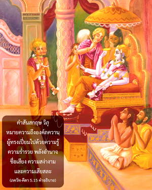

องค์ภควานทรงมิได้ถืออภิสิทธิ์เอากิจกรรมบาปหรือบุญของผู้ใด อย่างไรก็ดีดวงวิญญาณในร่างสับสนเนื่องมาจากอวิชชาที่ปกคลุมความรู้อันแท้จริงของพวกเขา



คำสันสกฤษ วิภุ หมายความถึงองค์ภควานฺผู้ทรงเปี่ยมไปด้วยความรู้ ความร่ำรวย พลังอำนาจ ชื่อเสียง ความสง่างาม และความเสียสละ พระองค์ทรงพึงพอพระทัยในพระองค์เองอยู่เสมอ ไม่ทรงถูกรบกวนด้วยการทำบาปหรือทำบุญ พระองค์ทรงมิได้สร้างสถานการณ์เฉพาะสำหรับสิ่งมีชีวิตใดๆ แต่สิ่งมีชีวิตสับสนด้วยอวิชชา และต้องการให้ตนเองถูกส่งมาอยู่ในสภาวะชีวิตวัตถุบางแห่ง ดังนั้น โซ่ตรวนแห่งกรรมและวิบากกรรมจึงเริ่มขึ้น สิ่งมีชีวิตเป็นธรรมชาติที่สูงกว่าซึ่งเปี่ยมไปด้วยความรู้ อย่างไรก็ดี เขามีแนวโน้มที่จะถูกอวิชชาครอบงำเนื่องมาจากพลังอำนาจที่จำกัดในตนเอง องค์ภควานฺทรงมีพระเดชทั้งปวง แต่สิ่งมีชีวิตไม่มี พระองค์ทรงเป็น วิภุ หรือสัพพัญญู แต่สิ่งมีชีวิตเป็น อณุ หรือละอองเล็กๆ เนื่องจากเป็นวิญญาณที่มีชีวิตจึงมีความสามารถที่จะต้องการตามสิทธิของตน ความต้องการเช่นนี้องค์ภควานฺ ผู้ทรงมีพระเดชทั้งปวงเท่านั้นที่จะตอบสนองให้ได้ ฉะนั้น เมื่อสิ่งมีชีวิตสับสนอยู่ในความต้องการของตนเอง พระองค์ทรงอนุญาตให้เขาตอบสนองความต้องการเหล่านั้น แต่ทรงไม่ได้รับผิดชอบต่อกรรม หรือผลกรรมของแต่ละสถานการณ์ที่แต่ละชีวิตอาจปรารถนา ดังนั้น ขณะที่อยู่ในสภาวะสับสนชีวิตในร่างสำคัญตนเองกับสถานการณ์ร่างกายวัตถุ และจะถูกจำกัดอยู่ในความทุกข์และความสุขอันไม่ถาวรของชีวิต องค์ภควานฺทรงเป็นสหายของสิ่งมีชีวิตอยู่เสมอในฐานะ ปรมาตฺมา หรืออภิวิญญาณ ฉะนั้น พระองค์ทรงเข้าใจความต้องการของปัจเจกวิญญาณ เสมือนดั่งเช่นเราสามารถได้กลิ่นของดอกไม้เมื่อเข้าไปใกล้ ความต้องการเป็นรูปแบบที่ละเอียดอ่อนของสิ่งมีชีวิตในสภาวะวัตถุ พระองค์ทรงสนองตอบความต้องการตามที่เขาควรได้รับ มนุษย์เสนอและองค์ภควานฺทรงสนอง ดังนั้น ปัจเจกชีวิตไม่ได้มีอำนาจทั้งหมดในการสนองตอบความต้องการของตนเอง อย่างไรก็ดี องค์ภควานฺทรงสามารถสนองตอบความต้องการทั้งหมด และทรงไม่มีอคติต่อผู้ใด พระองค์จึงทรงไม่รบกวนกับความต้องการของสิ่งมีชีวิตผู้มีเสรีภาพเพียงน้อยนิด เมื่อเขาปรารถนาองค์กฺฤษฺณจะทรงดูแลเป็นพิเศษ และสนับสนุนเขาให้ปรารถนาในหนทางที่สามารถบรรลุถึงพระองค์ และมีความสุขนิรันดร ฉะนั้น บทมนต์พระเวท กล่าวว่า เอษ อุ หฺยฺ เอว สาธุ กรฺม การยติ ตํ ยมฺ เอโภฺย โลเกภฺย อุนฺนินีษเต เอษ อุ เอวาสาธุ กรฺม การยติ ยมฺ อโธ นินีษเต “องค์ภควานฺทรงให้สิ่งมีชีวิตทำกิจกรรมบุญเพื่อที่เขาจะเจริญขึ้น ทรงให้สิ่งมีชีวิตทำบาปเพื่อที่เขาจะลงนรก” (เกาษีตกี อุปนิษทฺ 3.8)
อชฺโญ ชนฺตุรฺ อนีโศ ’ยมฺ
อาตฺมนห์ สุข-ทุห์ขโยห์
อีศฺวร-เปฺรริโต คจฺเฉตฺ
สฺวรฺคํ วาศฺวฺ อภฺรมฺ เอว จ
“สิ่งมีชีวิตมีเสรีภาพโดยสมบูรณ์ต่อความทุกข์หรือความสุขของตนเอง ด้วยความปรารถนาขององค์ภควานฺทำให้เขาสามารถไปสวรรค์ หรือลงนรก เสมือนดั่งเมฆที่ลอยไปตามลม”
ฉะนั้น วิญญาณในร่างพร้อมทั้งความต้องการตั้งแต่สมัยดึกดำบรรพ์ปรารถนาจะหลีกเลี่ยงกฺฤษฺณจิตสำนึก จึงเป็นสาเหตุแห่งความสับสนของตนเอง ดังนั้น ถึงแม้ว่าโดยพื้นฐานตัวเขาจะเป็นอมตะ มีความปลื้มปีติสุข และรอบรู้ แต่ด้วยความเป็นละอองอณูเล็กๆ จึงถูกอวิชชาครอบงำจนลืมสถานภาพพื้นฐานว่าเป็นผู้รับใช้ขององค์ภควานฺ สิ่งมีชีวิตอ้างว่าพระองค์ทรงเป็นผู้รับผิดชอบต่อความเป็นอยู่ทางสภาวะวัตถุของเขา เวทานฺต-สูตฺร (2.1.34) ได้ยืนยันเช่นกันว่า ไวษมฺย-ไนรฺฆฺฤเณฺย น สาเปกฺษตฺวาตฺ ตถา หิ ทรฺศยติ “องค์ภควานฺทรงไม่เกลียด และไม่ชอบผู้ใด แม้ว่าพระองค์ทรงดูเหมือนว่าทรงจะเป็นเช่นนั้น”